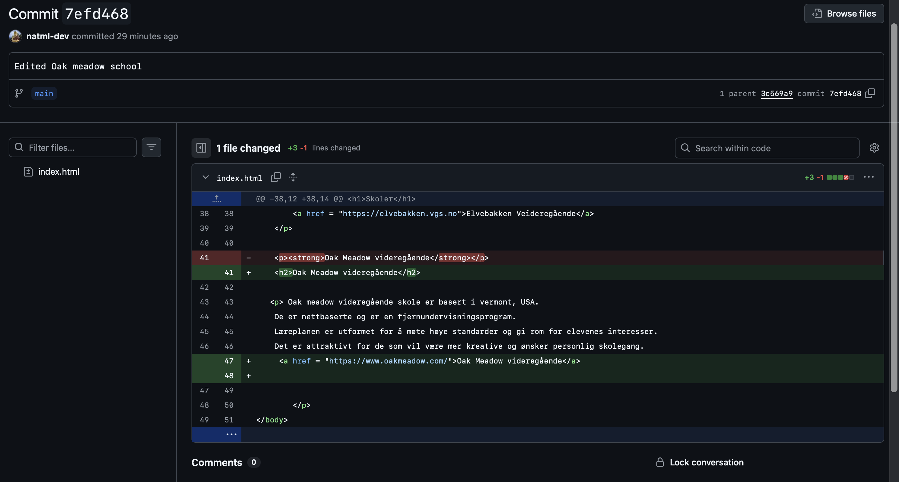
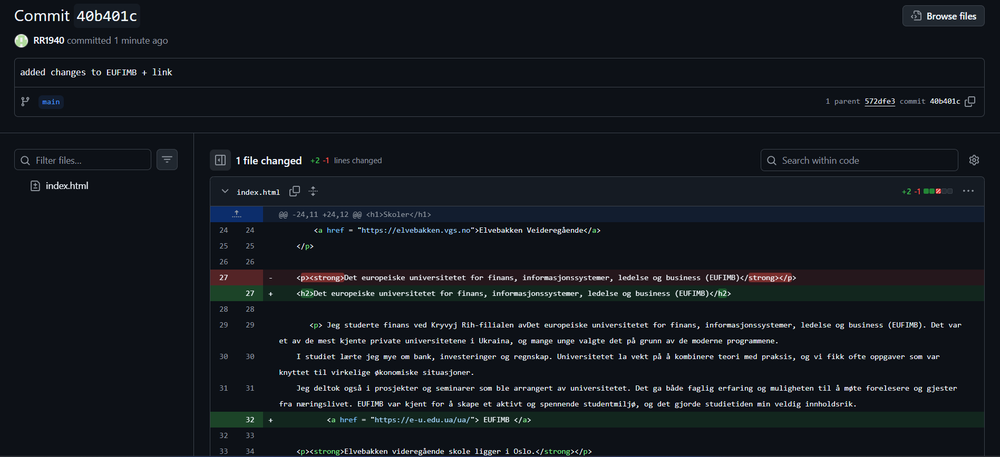
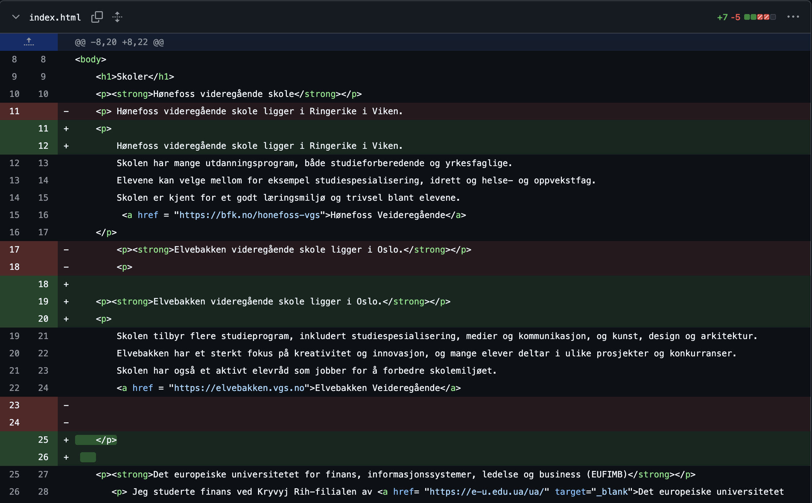
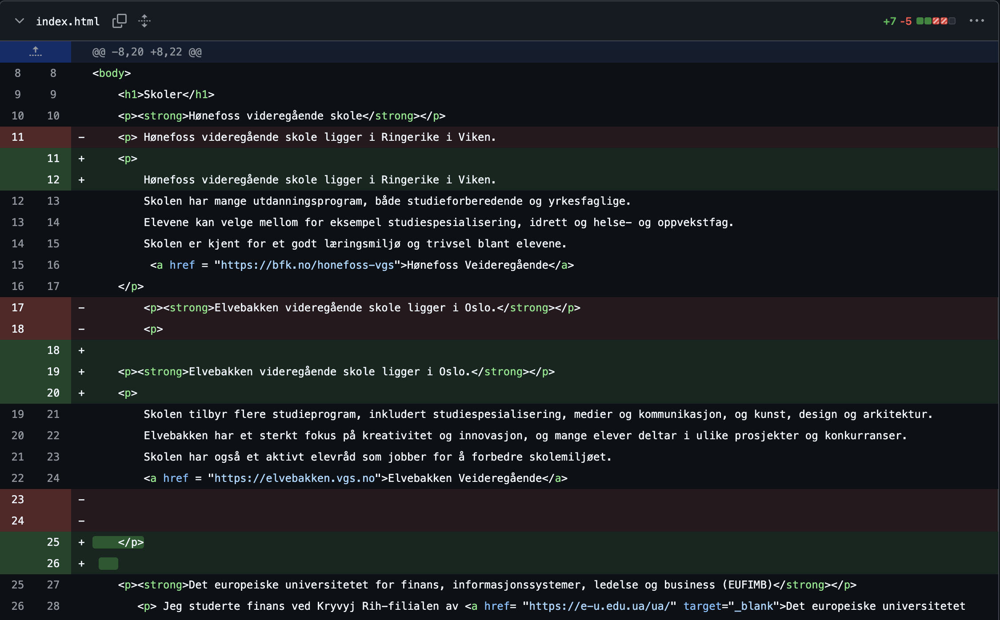

Hønefoss videregående skole ligger i Ringerike i Viken. Skolen har mange utdanningsprogram, både studieforberedende og yrkesfaglige. Elevene kan velge mellom for eksempel studiespesialisering, idrett og helse- og oppvekstfag. Skolen er kjent for et godt læringsmiljø og trivsel blant elevene. Hønefoss Veideregående
Elvebakken videregående skole ligger i Oslo. Skolen tilbyr flere studieprogram, inkludert studiespesialisering, medier og kommunikasjon, og kunst, design og arkitektur. Elvebakken har et sterkt fokus på kreativitet og innovasjon, og mange elever deltar i ulike prosjekter og konkurranser. Skolen har også et aktivt elevråd som jobber for å forbedre skolemiljøet. Elvebakken Videregående
Jeg studerte finans ved Kryvyj Rih-filialen avDet europeiske universitetet for finans, informasjonssystemer, ledelse og business (EUFIMB). Det var et av de mest kjente private universitetene i Ukraina, og mange unge valgte det på grunn av de moderne programmene. I studiet lærte jeg mye om bank, investeringer og regnskap. Universitetet la vekt på å kombinere teori med praksis, og vi fikk ofte oppgaver som var knyttet til virkelige økonomiske situasjoner. Jeg deltok også i prosjekter og seminarer som ble arrangert av universitetet. Det ga både faglig erfaring og muligheten til å møte forelesere og gjester fra næringslivet. EUFIMB var kjent for å skape et aktivt og spennende studentmiljø, og det gjorde studietiden min veldig innholdsrik. EUFIMB
Min skole var en av de beste i hele Norge - Elvebakken vgs. Skole ligger seg i Oslo, nær Storgata veien. Circa 1500 mennesker studerer i den skole. Det var hyggelig å møte ny personer med med lignende interesser. Mange lærere prøvde å hjelpe meg med å utvikle norskkunnskapene mine, noe jeg er takknemlig for. Elvebakken Videregående
Oak meadow videregående skole er basert i vermont, USA. De er nettbaserte og er en fjernundervisningsprogram. Læreplanen er utformet for å møte høye standarder og gi rom for elevenes interesser. Det er attraktivt for de som vil være mer kreative og ønsker personlig skolegang. Oak Meadow videregående
Each studentadded their GitHub commitscreenshot here
  
